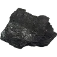
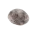
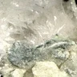
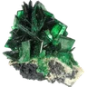
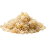

Correspondence Grimoire
 Earth
Earth

Coal
Magdalena Stone
Strontianite
Torbernite
Dammar GumElemental Attributes
Earth governs the physical realm and material security, embodying a melancholic temperament characterized by practicality and grounding energy. Those drawn to Earth are typically stable and methodical, finding power in tangible reality and physical sensation.
Temperament: Melancholic
Function: Touch
Attribute: Physical, security
Direction: North
Season: Winter
Archangel: Uriel
Elementals: Gnomes
Tarot Suit: Pentacles
Playing Card Suit: Diamonds
Zodiac Signs: Taurus, Virgo, Capricorn
Active Colors: Yellow, Green
Passive Color: Blue
Core Qualities: Endurance, Material Success, Responsibility
Associated Domains: Abundance, Agriculture, Career, Investments, Money, Property, Prosperity, Wisdom
When to Work with Earth: Use Earth if you need stability.
The Living Planet
Many practitioners view Earth not as inert matter to be controlled but as a living, breathing entity deserving honor and protection. This perspective aligns with shamanic traditions that recognize the planet itself as a conscious being with its own spirit and intelligence.
From this worldview, every living thing carries a unique energy pattern or spirit. Animals, plants, stones, and the land itself serve as teachers. Practitioners who embrace this outlook tend to think in terms of interconnected systems, remaining mindful of their relationship to nature and the cosmos.
Soil Magick
In early agrarian cultures, farmers gave offerings of bread or mead to the soil to ensure a good crop. Soil also served as a component in many traditional spells. People buried symbolic items in the ground to banish something or encourage growth.
Traditional Soil Workings:
- To remove sickness, spit in the soil, cover that spot, and walk away without looking back
- To speed recovery from illness, grow health-promoting plants in soil taken from your footprints
- To ensure a lover's fidelity, gather soil from beneath your foot and place it in a white cloth bag
From the Womb of Gaia
Native American stories tell us that the soul waits for rebirth in the earth's womb beneath the soil. Myths from ancient Sumer and Guatemala say humankind was shaped from soil. According to the ancient Greeks, the heavens were born into existence from the womb of Gaia, the mother who oversees all the earth's abundance.
Earth Personalities
People who have a lot of earth energy in their makeup tend to be practical, reliable, determined, tenacious, sensual, hard-working, cautious, and no-nonsense individuals. Earth energy moves slowly and steadily, making it ideal when a situation or spell requires patience or gradual development.
Dialogue with Mother Earth
Some practitioners actively communicate with trees, animals, stones, and other natural elements. Beyond literal conversation, this involves deep observation and listening to understand one's place within the natural order. The relationship is reciprocal: engaging in practices that enrich both practitioner and planet.
When we recognize ourselves as part of a greater whole, acting against that whole becomes counterproductive. Harm to the environment becomes harm to kin, friends, and self. This understanding encourages moving gently through the world, respecting all life, and honoring the sacred in all things.
Connecting with Earth Energy
Nature is always there, just outside your door. The green spaces, mountains, forests, beaches, rivers, lakes, and streams are waiting for you to discover and explore. Fostering a connection with the earth helps with personal grounding and inner balance. Finding ways to be more connected to the earth will increase the power of your magickal practice as you form strong relationships with the elements.
Outdoor Altars and Mandalas
A simple and effective way to connect with the earth is to create a temporary altar outside with items found in nature. Being creative with natural materials is a fun way to embrace your inner child. Start by finding brightly colored leaves, flower petals, twigs, nuts, and seeds. Delight in the discovery of small items that have fallen to the ground. You don't need to concern yourself with correspondences and meanings; just enjoy the process. Take your time and be present in the moment.
Another way to connect creatively with earth energy is to incorporate a mandala into your altar with natural materials. The word mandala in Sanskrit means circle. Creating a mandala is a sacred art that helps the creator dive deep into their own spiritual practice and cultivate peace. Placing items in a circle-like pattern helps us connect with earth energies. A mandala is a physical representation of our connectedness with everything around us in the natural world.
Forest Bathing (Shinrin-yoku)
In Japan starting in the 1980s, the term shinrin-yoku, or forest bathing, was used to describe the practice of visiting a green space filled with trees for therapeutic benefit. This intentional practice was found to be an effective way to regain mental clarity and well-being, in addition to helping people connect with and care more about protecting trees and the earth.
No matter where you live, you can find peace and comfort while spending time with trees. Scientists have discovered that time spent with trees helps us release the hormone oxytocin, known as the "love hormone." Your tree time will literally enhance those warm and fuzzy feelings within.
Health Benefits of Earth Connection
Spending time outside can help to lower blood pressure, increase oxygen intake, and maintain mental focus. Find a setting in nature that makes you feel safe and at ease. If you don't have a forest nearby, start small by setting an intention to spend time with the sun as it rises or sets.
The way we interact with and care for the earth reflects how we feel about ourselves. Giving nature the time it deserves in our daily life is a form of self-care.
Earth in Spell-casting
Earth functions as both power source and foundation, fueling growth while keeping everything solid and grounded. For anyone venturing into magickal realms, earth supplies the force that keeps you rooted and present. Practitioners benefit from spending time in the garden (even without gardening), going barefoot when possible, working with real clay, or simply playing in the mud. A spa mud bath works, too.
Earth is a feminine, yin force. Its magickal power flows through plants drawn from the ground, clay figures molded by hand, and raw soil: cemetery dust, crossroads earth, and similar materials.
Engaging Your Senses
- Hear: Listen to the sound of leaves crunching underfoot. Discover the various songs of the birds. Stop and listen to the wind rushing through leaves high in the trees.
- Touch: Feel the earth with your skin.
- Taste: Inhale and taste the crispness of the air.
- Smell: Discover the scents of the forest all around you.
- See: Slow down and observe your surroundings. Notice a spiderweb glistening in the rays of the sun. Look for small things such as ants marching or the journey of tiny garden bugs.
The Earth Mother
The oldest and most enduring image of the Earth is the Earth Mother herself, given a face in the Greek goddess Gaia. The historian Herodotus observed that every known name for the Earth is feminine, and if the Earth is the Mother then the heavens are the Father, returning us to the principle that what is above mirrors what is below. Her names run through nearly every tradition: in Kabbalistic thought she is the Shekinah, who reappears in Hindu philosophy as Shakti, the feminine cosmic energy, and as Kali Ma, the dark mother; the Norse called her Erda, and the classical world gave her as Gaia, Terra, and Europa.
A theme that surfaces again and again in creation myth is a mound of earth rising out of the first waters. The Earth itself is a womb, heavy with water, minerals, and the seeds of every plant. Life pushes up out of it and, when its material span is spent, sinks back into it, so that decay feeds the generation to come. Within the landscape her most fitting form is the cave, the hidden hollow that stands for the womb and the secret place of gestation.
The Earth Mother
The oldest and most enduring image of the Earth is the Earth Mother herself, given a face in the Greek goddess Gaia. The historian Herodotus observed that every known name for the Earth is feminine, and if the Earth is the Mother then the heavens are the Father, returning us to the principle that what is above mirrors what is below. Her names run through nearly every tradition: in Kabbalistic thought she is the Shekinah, who reappears in Hindu philosophy as Shakti, the feminine cosmic energy, and as Kali Ma, the dark mother; the Norse called her Erda, and the classical world gave her as Gaia, Terra, and Europa.
A theme that surfaces again and again in creation myth is a mound of earth rising out of the first waters. The Earth itself is a womb, heavy with water, minerals, and the seeds of every plant. Life pushes up out of it and, when its material span is spent, sinks back into it, so that decay feeds the generation to come. Within the landscape her most fitting form is the cave, the hidden hollow that stands for the womb and the secret place of gestation.